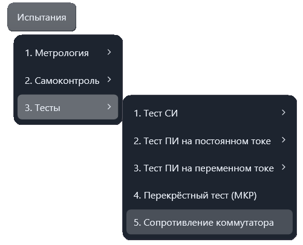
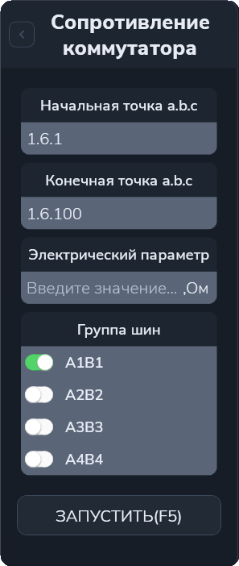

Сопротивление коммутатора
Тест контролирует сопротивление контактов коммутатора для заданного диапазона точек на выбранной паре шин. Мультиметр последовательно измеряет сопротивление каждой точки, а приложение сравнивает результат с заданным верхним пределом в омах (Ом).
Откройте «Испытания → Тесты → Сопротивление коммутатора». Команда открывает отдельную рабочую вкладку; проверка запускается отдельно.


Параметры
| Поле | Что указать |
|---|---|
| Начальная точка a.b.c | Первую точку проверяемого диапазона. |
| Конечная точка a.b.c | Последнюю точку диапазона включительно. |
| Электрический параметр | Верхний предел допустимого сопротивления в Ом. |
| Группа шин | Одну пару шин: A1B1, A2B2, A3B3 или A4B4. |
Адрес a.b.c задаёт номер шасси, номер модуля и номер точки.
Для этой проверки задавайте диапазон в пределах одного модуля:
тест использует модуль начальной точки и перебирает номера точек от начального до конечного.
Например, 1.6.1–1.6.100 задаёт проверку точек 1–100 модуля 6 шасси 1.
Выбранная группа шин применяется ко всему диапазону; остальные группы автоматически не проверяются.
Порядок работы
- Откройте вкладку «Сопротивление коммутатора».
- Введите начальную и конечную точки одного модуля.
- Задайте предел сопротивления в Ом и выберите группу шин.
- Нажмите «Запустить» или F5 в активной вкладке.
- Следите за адресами точек, измерениями и сообщениями в протоколе. При ошибке ориентируйтесь на указанную точку и запрос приложения.
Как выполняется проверка
- Приложение проверяет ввод и подготавливает МКР, устройство коммутации шин и мультиметр из конфигурации выбранного шасси.
- МКР и мультиметр подключаются к выбранной паре шин. Мультиметр переводится в режим прозвонки с измерением сопротивления.
- Очередная точка подключается одновременно к обеим шинам пары.
- Мультиметр измеряет сопротивление; адрес точки, значение в Ом и оценка выводятся в протокол.
- Точка отключается, затем проверяется следующая точка диапазона.
Результаты
Результат считается успешным, если сопротивление находится в диапазоне от 0 до заданного предела включительно. Равенство верхнему пределу допускается. Значение вне диапазона или перегрузка прибора не считаются успешным измерением.
Электрический параметр — верхний предел сопротивления, а не эталон для расчёта метрологической погрешности. Для проверки другой пары шин выберите её и запустите тест повторно. Открывать или транслировать программу контроля для этой проверки не требуется.
Другие проверки описаны в разделе «Меню “Тесты”».